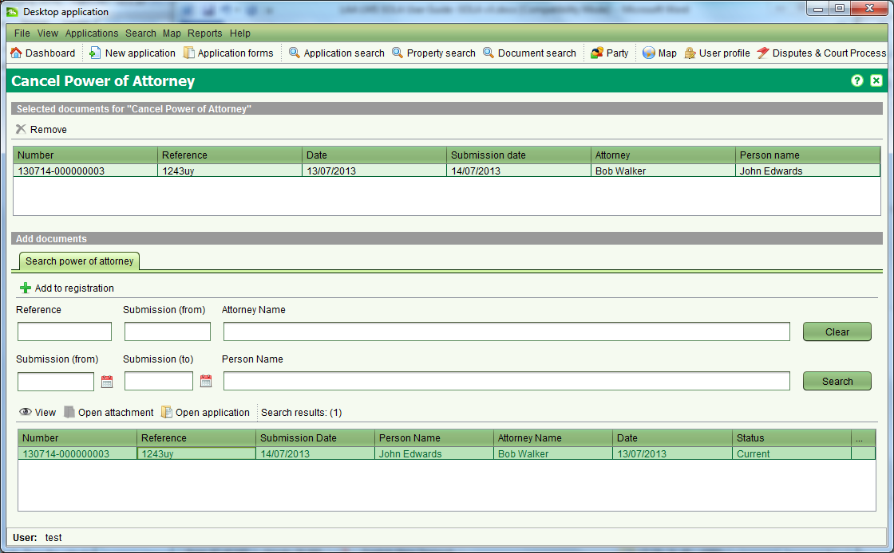

Cancel Power of Attorney
This service is used to revoke a Power of Attorney. The Power of Attorney
will remain linked to any applications or property transactions it was
associated with prior to being revoked but it will not be possible to
use the Power of Attorney on any new applications.
Lodge an Application
Steps
- From the Dashboard, select the
 New application tool to open the Application Details screen.
New application tool to open the Application Details screen.
- On the General tab, enter the contact details for the person
making the request and select the agent from the Agent drop down if appropriate.
- On the Services tab, add the Cancel Power of Attorney service to the application.
- This service does not directly reference a property or plot so
no property or plot information is required on the Property or Plot tabs.
- On the Documents tab, record each of the physical documents provided
by the person cancelling the POA.
- Ensure you select the appropriate document type and record
the document date (i.e. the date recorded on the face of the
physical document) or today’ s date if the physical document is not dated.
- Enter a reference number for the document and a description.
The reference number should be taken from the physical document.
If the physical document does not have any reference number,
then enter the application number, period and document
sequence number (e.g. 120001.03).
- The Source Agency is the name of the organization that created
the physical document. E.g. For the POA, this may be the name
of the grantor. This field is optional and can be left blank
- Click the img style="width: 20px; height: 21px;" alt="" src="../images/save_icon.png">
Save button. This will lodge the application and produce the lodgement
notice. Print the notice and give it to the person as proof the
application has been lodged. The lodgement notice will indicate
the fee to be paid for the application.
Fee Payment
Once the lodgement notice is printed, the person will need to take the
notice to the cashier and arrange payment. When payment has been made,
the cashier will locate the Unassigned application list on the SOLA Dashboard,
 Open the application and check the Fee Paid flag on the Fees tab to
indicate the application can continue processing./p>
Open the application and check the Fee Paid flag on the Fees tab to
indicate the application can continue processing./p>
Assign the Application
Steps
- From the SOLA Dashboard, check the Unassigned applications list
to confirm the fee for the application has been paid. If the fee
has not been paid it will not be possible to assign the application.
In this situation notify the person noted as the contact and/or cashier
to confirm the payment status for the application
- If the application fee has been paid, select the application in
the Unassigned applications list and click the
 Assign tool. This will open the Application Assignment dialog.
Assign tool. This will open the Application Assignment dialog.
- Click the Assign button to assign the application. When the Assign
action is complete, you will be returned to the Dashboard and the
assigned application will appear in your Assigned applications list.
Revoke the Power of Attorney
As with registering the POA, you use the Document Registration screen to revoke the POA.
Steps
- From the Dashboard, select the application in the Unassigned applications list and click the
tool. This will open the Application Assignment dialog.
- On the Services tab, select the Cancel Power Of Attorney service and click
 Start tool. This will open the Document Registration screen.
Start tool. This will open the Document Registration screen.
- Use the Power of Attorney search to locate the POA to be revoked,
select it from the search results list and click
 Add to registration.
Add to registration.

- Once complete, close the Document Registration screen and on the
Services tab of Application Details, select the Cancel Power of Attorney
service and click Complete. This will run the SOLA business rules
to validate the application data. If there is a critical failure,
you must remedy the failure as it will not be possible to approve
the application otherwise.
Complete the Application
Steps
- From the Dashboard
Open the application with the Registration of Power of Attorney service from your Assigned applications list (if not already opened).
- Use the
 Validate tool to check the status of the application data.
If there are any rule failures, review the application data and
correct the issues as appropriate before proceeding to approve the application.
Validate tool to check the status of the application data.
If there are any rule failures, review the application data and
correct the issues as appropriate before proceeding to approve the application.
- Use the
 Approve action in the Application action dropdown to approve the application.
Approve action in the Application action dropdown to approve the application.
- Manually prepare a notification to confirm the POA has been registered
and send/ this to the customer. You can record that when the
notification has been sent by using the
Dispatch action of the Application action dropdown.
- Use the
 Archive action to complete the Application.
Archive action to complete the Application.
Notes
- Revoking the Power of Attorney will not delete it from SOLA,
but it will prevent the POA being used on any future application.
Also See